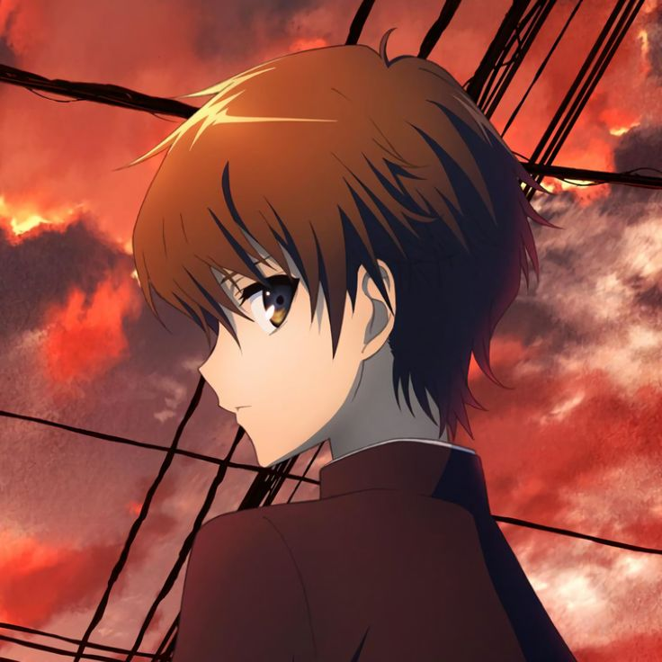
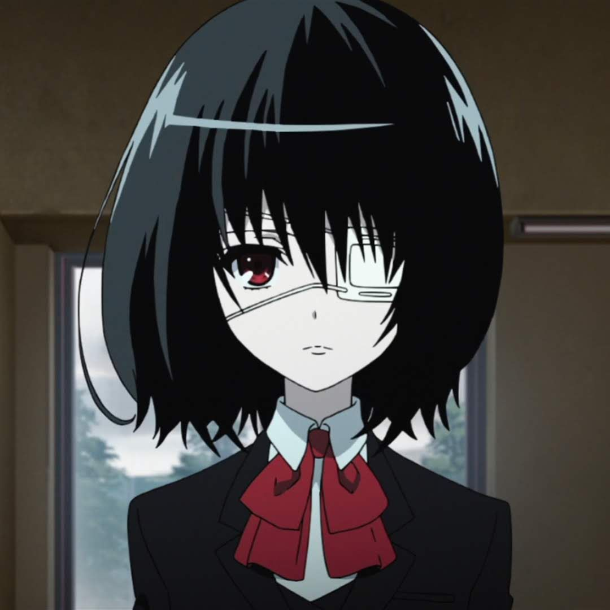

Es el protagonista masculino. Se muda a Yomiyama desde Tokio y es transferido a la clase 3-3 de la Secundaria Yomiyama Norte. Al haberse ausentado las primeras semanas por un problema pulmonar, desconoce las reglas y la maldición que rodea a su salón, lo que lo lleva a interactuar con Mei Misaki sin saber que los demás la ignoran.

Mei Misaki es la protagonista femenina del anime y la novela de misterio y terror Another. Es una estudiante de la Clase 3-3 de la Escuela Secundaria Yomiyama Norte en 1998. Sus compañeros la ignoran por completo y fingen que no está allí como una medida para intentar frenar la maldición o "calamidad" de la clase